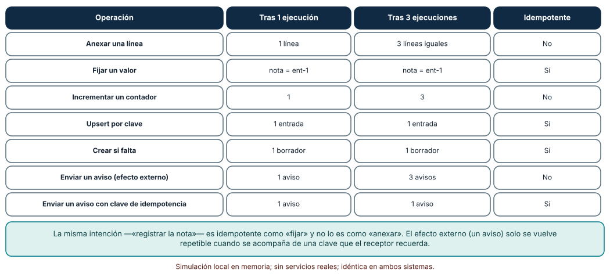
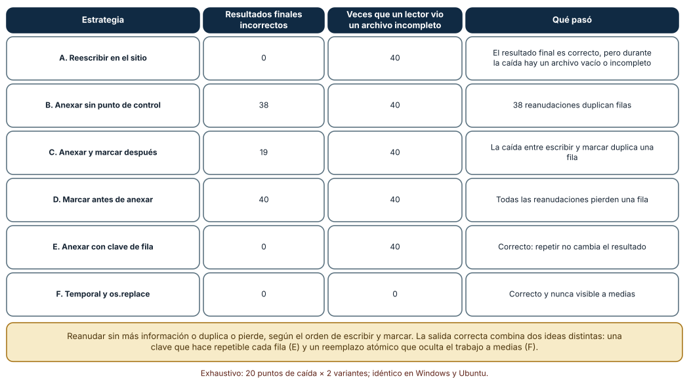
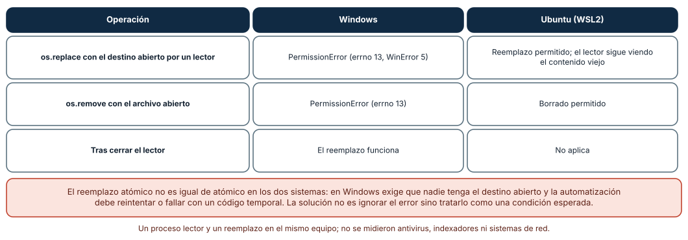

← SE-223 — Schedulers, workers y trabajos por lotes · ↑ Parte 18 · 📚 Índice completo · 🌐 Portal · SE-225 — Distribución de binarios y actualizaciones →
Punto profesional y fundamento pedagógico
Punto profesional. La clase existe para diseñar automatizaciones que se pueden repetir y reanudar sin cambiar el resultado: que ejecutar dos veces lo mismo deje el mismo estado, que una caída en cualquier paso se recupere sin duplicar ni perder trabajo y que un archivo a medias nunca sea visible como si estuviera completo.
Por qué aparece aquí. Se sitúa después de Schedulers, workers y trabajos por lotes (SE-223) y antes de Distribución de binarios y actualizaciones (SE-225): SE-223 dejó reintentos y colas, que solo son seguros si repetir es seguro; esta clase da esa garantía a las operaciones de notas y deja la técnica de escritura atómica y de claves de idempotencia que SE-225 usará para actualizar binarios.
Error conceptual que debe corregir. Creer que «reanudar desde donde se quedó» basta, o que reintentar es siempre inocuo. Reanudar sin una clave duplica o pierde, según el orden de escribir y marcar; y un reemplazo «atómico» no lo es igual en todos los sistemas.
Secuencia de aprendizaje. Antes de leer la solución, predices cuáles de siete operaciones sobreviven a repetirse tres veces, cuántos de 40 escenarios de caída dejan un resultado incorrecto con cinco estrategias de escritura y qué ocurre al reemplazar un archivo abierto en Windows; después lo ejecutas. La secuencia usa predicción, explicación propia, contraste y recuperación. ICAP distingue participación de construcción de conocimiento; How People Learn II exige conectar conocimiento previo, contexto y transferencia; la práctica de recuperación respalda producir de nuevo la explicación tras una demora; y Education for Life and Work exige devolución que explique la causa del error.
Evidencia de aprendizaje. idempotency-log.md con la clasificación de las operaciones de notas, la matriz de 6 estrategias por 40 caídas y la comparación de reemplazo entre sistemas. Debe contener predicción previa, observación, explicación causal, contraejemplo y qué hallazgo haría rechazar una estrategia.
Límite de la conclusión. Las caídas se simulan con una excepción en un paso, no con un corte de energía ni un sistema de archivos que reordena escrituras; no se probó fsync ni almacenamiento en red; el reemplazo se probó entre un lector y un escritor en el mismo equipo.
Trazabilidad fuente → afirmación
| Fuente primaria u oficial | Afirmación que respalda | Lo que no prueba |
|---|---|---|
POSIX: rename | Define que rename sustituye el destino de forma atómica dentro de un sistema de archivos. | No garantiza durabilidad tras un corte de energía. |
Python: os.replace | Documenta que sustituye el destino y que en Windows puede fallar si el destino está en uso. | No dice cómo recuperarse del fallo. |
| RFC 9110: Idempotent Methods | Define método idempotente: varias peticiones idénticas tienen el mismo efecto que una. | Define el efecto previsto, no que el servidor lo cumpla. |
| Pillai et al., «All File Systems Are Not Created Equal» (OSDI, 2014) | Muestra que las aplicaciones asumen propiedades de atomicidad y orden de los sistemas de archivos que no siempre se cumplen. | No cubre los sistemas de archivos actuales. |
Python: tempfile | Documenta archivos temporales creados de forma segura. | No resuelve la durabilidad. |
Antes de empezar
Recupera lo aprendido en SE-223: un trabajo que falla se reintenta. La pregunta activa es: ¿qué ocurre si la misma operación se ejecuta dos veces, o se interrumpe a la mitad y se reanuda?
Prerrequisitos
- Haber completado
SE-223o poder explicar qué es un trabajo venenoso. - Python 3.11 o posterior y un directorio de trabajo temporal.
- Trabajar con archivos sintéticos y un efecto externo simulado por un contador.
Problema auténtico
El trabajo nocturno de notas publica las calificaciones: anexa cada fila a un archivo de salida y envía un aviso a cada estudiante. Una noche el servidor se reinicia a la mitad; el trabajo se relanza y las 400 primeras notas aparecen duplicadas en el archivo, y 400 estudiantes reciben dos avisos. Otro día el archivo quedó con la mitad de las filas mientras un informe lo leía. El equipo «arregla» añadiendo un archivo de control, y la siguiente caída pierde una fila.
Objetivos observables
Al terminar podrás:
- clasificar operaciones en idempotentes y no idempotentes y convertir las segundas con una clave;
- enumerar los puntos de caída de un lote y evaluar estrategias de reanudación con una matriz;
- escribir un archivo de modo que ningún lector vea un contenido parcial;
- explicar por qué el orden entre escribir y marcar produce duplicados o pérdidas;
- tratar el fallo de reemplazo de Windows como una condición esperada.
Mapa conceptual
Ver la notación fuente del diagrama
flowchart LR
I[Intención] --> C[Clave de idempotencia]
C --> O{¿Ya hecho?}
O -->|sí| S[Omitir]
O -->|no| E[Efecto]
E --> T[Archivo temporal]
T -->|reemplazo atómico| F[Archivo final]
E --> M[Marca de progreso]El mapa se lee como un filtro: la clave decide si el efecto ya se produjo; el efecto se escribe en un archivo temporal y se publica con un reemplazo atómico; la marca de progreso se actualiza después. No describe la durabilidad ante cortes de energía.
Temas y por qué importan
| Tema | Por qué cambia una decisión profesional | Evidencia mínima |
|---|---|---|
| Idempotencia | Hace seguro el reintento. | Predicción, traza causal y contraejemplo de Idempotencia en idempotency-log.md |
| Claves de idempotencia | Convierten un efecto repetible en uno único. | Predicción, traza causal y contraejemplo de Claves en idempotency-log.md |
| Puntos de control | Evitan rehacer, pero crean ventanas de duplicado o pérdida. | Predicción, traza causal y contraejemplo de Puntos de control en idempotency-log.md |
| Escritura atómica | Oculta el trabajo a medias a los lectores. | Predicción, traza causal y contraejemplo de Atomicidad en idempotency-log.md |
| Diferencias de plataforma | El reemplazo no se comporta igual en Windows y Linux. | Predicción, traza causal y contraejemplo de Plataformas en idempotency-log.md |
Conceptos y decisiones
1. Idempotente no es «sin efecto»
Una operación es idempotente si ejecutarla varias veces deja el mismo estado que ejecutarla una (RFC 9110 lo define para métodos HTTP: PUT y DELETE lo son, POST no necesariamente). «Fijar la nota de ent-1 a 80» lo es; «sumar 1 al contador» y «anexar una línea» no. La diferencia está en la intención: describir el estado deseado (fijar, crear si falta, upsert por clave) permite repetir; describir un cambio relativo (sumar, anexar) no. La primera decisión de diseño es reformular las operaciones como estado deseado cuando se pueda.
2. Efectos externos y claves de idempotencia
Cuando el efecto sale del sistema —un correo, un cobro, una llamada a otro servicio— no se puede «fijar»: se envió o no se envió. La técnica estándar es una clave de idempotencia: un identificador único de la intención («aviso-nota-ent-1-v3») que el emisor guarda y el receptor recuerda; si llega repetida, se devuelve el resultado anterior sin repetir el efecto. La clave debe derivarse de la intención y no de la ejecución (no una hora ni un número aleatorio nuevo en cada intento), porque entonces cada reintento parece una intención distinta.
3. Puntos de control: duplicar o perder
Reanudar «desde donde se quedó» requiere registrar el progreso. Pero escribir el resultado y marcar el progreso son dos pasos, y puede caer entre ambos. Si se escribe y luego se marca, una caída entre medias deja la fila escrita sin marcar: al reanudar se repite y se duplica (entrega al menos una vez). Si se marca y luego se escribe, la caída deja la marca sin la fila: se pierde (entrega como máximo una vez). No hay orden que dé «exactamente una vez» sin ayuda: hace falta que el paso sea idempotente (una clave por fila) o que escribir y marcar sean una sola operación atómica.
4. Escritura atómica: el trabajo a medias no se publica
La técnica clásica: escribir en un archivo temporal en el mismo directorio y sistema de archivos que el destino y publicarlo con os.replace, que sustituye el destino de una vez. Un lector ve el archivo viejo completo o el nuevo completo, nunca una mezcla. Para durabilidad ante cortes de energía hace falta además vaciar los búferes y el archivo (flush y os.fsync) y a veces el directorio; esta clase mide la visibilidad, no la durabilidad. La atomicidad no sustituye a la idempotencia: una caída antes del reemplazo deja un temporal que debe limpiarse y una reanudación que repite el trabajo.
5. El reemplazo depende del sistema
En Linux se puede reemplazar o borrar un archivo que otro proceso tiene abierto: el lector conserva su descriptor y ve el contenido viejo. En Windows, os.replace y os.remove fallan con PermissionError si algún proceso tiene el archivo abierto sin permiso de compartir el borrado (el comportamiento de open de Python). La automatización portable debe tratar ese fallo como una condición esperada: reintentar con espera breve y límite, o fallar con el código temporal acordado en SE-220.
Siete operaciones, una y tres veces
Se ejecutó cada operación una vez y tres veces sobre un estado vacío. Anexar una línea: de 1 línea a 3 iguales (no idempotente). Fijar un valor: igual (idempotente). Incrementar un contador: de 1 a 3 (no). Upsert por clave: igual (sí). Crear si falta: igual (sí). Enviar un aviso (efecto contado): de 1 a 3 avisos (no). Enviar un aviso con clave de idempotencia: 1 aviso en ambos casos (sí).
def enviar_aviso_con_clave(estado, clave):
enviados = estado.setdefault("enviados", [])
if clave not in enviados: # la clave es la intención, no el intento
enviados.append(clave)
estado["avisos_ok"] = estado.get("avisos_ok", 0) + 1
Cómo leer la figura. Cada fila compara el estado tras una y tres ejecuciones; la última columna dice si coinciden. Dónde deja de valer: el estado es un diccionario en memoria y el «aviso» un contador; un servicio real puede aceptar la clave y fallar al guardarla, o expirar las claves, y esos casos no se modelaron. La tabla clasifica la intención de la operación, no su implementación.
Seis estrategias, cuarenta caídas
Un lote escribe 20 filas. Para cada estrategia se provocó una caída en cada uno de los 20 pasos, con y sin una escritura parcial o una caída entre escribir y marcar (40 escenarios), se reanudó sin fallo y se comparó el resultado con las 20 filas esperadas. A. Reescribir en el sitio: 0 resultados incorrectos, pero tras la caída un lector vio un archivo vacío o incompleto en los 40. B. Anexar sin punto de control: 38 resultados incorrectos, todos con duplicados. C. Anexar y marcar después: 19 incorrectos (duplicados). D. Marcar antes de anexar: 40 incorrectos, todos con pérdidas. E. Anexar con clave de fila: 0 incorrectos. F. Temporal y os.replace: 0 incorrectos y 0 veces que un lector vio un archivo incompleto.

Cómo leer la figura. Cada fila es una estrategia; las columnas centrales cuentan escenarios con resultado final incorrecto y con un archivo parcial visible; la última explica el mecanismo. Dónde deja de valer: las caídas son excepciones simuladas en puntos discretos; no incluyen un reordenamiento del disco ni la pérdida de datos no vaciados. E y F resuelven problemas distintos (repetición y visibilidad) y la solución completa los combina.
Reemplazar un archivo que alguien lee
Con un lector que tiene el archivo de destino abierto, os.replace(tmp, destino) en Windows falló con PermissionError (errno 13, WinError 5); en Ubuntu se permitió y el lector siguió viendo el contenido viejo. os.remove con el archivo abierto: PermissionError en Windows, permitido en Ubuntu. Tras cerrar el lector, el reemplazo funcionó en Windows.
for intento in range(5):
try:
os.replace(tmp, destino); break
except PermissionError: # Windows: el destino está en uso
time.sleep(0.05 * (intento + 1))
else:
sys.exit(75) # fallo temporal acordado en SE-220
Cómo leer la figura. Cada fila es una operación sobre un archivo abierto; las columnas son los dos sistemas. Dónde deja de valer: un solo lector abierto con el modo por defecto de Python; antivirus, indexadores y archivos abiertos con permiso de compartir cambian el resultado en Windows, y los sistemas de archivos de red tienen sus propias reglas.
Definiciones de trabajo
- idempotencia: propiedad de una operación cuyo efecto no cambia al repetirla con la misma entrada.
- clave de idempotencia: identificador de la intención que permite reconocer y omitir una repetición.
- punto de control: registro del progreso que permite reanudar sin empezar de cero.
- escritura atómica: publicación de un archivo de modo que un lector ve el contenido anterior o el nuevo completo, nunca una mezcla.
- entrega al menos una vez / como máximo una vez: garantías que duplican o pierden, respectivamente, ante una caída.
Las definiciones son operativas para la herramienta notas. No convierten términos con historia más amplia en sinónimos y deben contrastarse con la documentación primaria enlazada al final.
Ejemplo mínimo
El fragmento publica un archivo de forma atómica. Antes de ejecutarlo, predice qué ve un lector si el proceso cae después de la segunda línea.
import os, tempfile
def publicar(destino, filas):
d = os.path.dirname(os.path.abspath(destino))
fd, tmp = tempfile.mkstemp(dir=d, suffix=".tmp")
try:
with os.fdopen(fd, "w", encoding="utf-8", newline="\n") as f:
for fila in filas:
f.write(fila + "\n")
os.replace(tmp, destino)
finally:
if os.path.exists(tmp):
os.remove(tmp)El lector ve el archivo anterior intacto. Prueba a lanzar una excepción tras la segunda fila y observa que el temporal se limpia; registra versión y sistema.
Ejemplo profesional
La publicación nocturna de notas calcula una clave por fila (ent-1:v3), escribe las filas nuevas en un temporal del mismo directorio, vacía y reemplaza de forma atómica con reintentos ante PermissionError, y envía los avisos con la clave como cabecera de idempotencia. Un archivo de progreso (también reemplazado atómicamente) guarda la última clave publicada; al reanudar, la herramienta verifica contra el archivo final y no solo contra el de progreso. Una prueba recorre los 20 puntos de caída del lote y exige que el resultado final sea idéntico, que no haya temporales huérfanos y que cada aviso se envíe una sola vez.
Compara el caso normal con una caída en el paso 7, una reanudación doble y un lector con el archivo abierto en Windows. La publicación es apropiada cuando los tres terminan con el mismo contenido; es peligrosa cuando el único mecanismo es «volver a ejecutar».
Práctica guiada
- Clasifica las operaciones de
notasen idempotentes y no, y reformula las segundas como estado deseado. - Ejecuta siete operaciones una y tres veces y compara los estados.
- Implementa seis estrategias de escritura y provoca una caída en cada paso, con y sin escritura parcial.
- Reanuda cada escenario y compara con el resultado esperado; cuenta duplicados, pérdidas y archivos parciales visibles.
- Escribe la publicación atómica con temporal en el mismo directorio y reemplazo.
- Reproduce el reemplazo con un lector abierto en Windows y en Ubuntu y añade el reintento acotado.
- Pide a otra persona que reproduzca la matriz solo desde
idempotency-log.md.
Ejercicios
- Clave de aviso: diseña la clave de idempotencia de «avisar a un estudiante de su nota» y explica por qué la hora del envío no sirve.
- Combinar E y F: escribe una estrategia que use claves de fila y reemplazo atómico y demuestra con los 40 escenarios que no duplica, no pierde y no muestra archivos parciales.
- Temporal huérfano: una caída deja
salida.csv.tmp; diseña quién lo limpia, cuándo y con qué seguridad (¿y si otra instancia lo está escribiendo?). - Durabilidad: explica qué añadiría
os.fsynca la estrategia F y qué escenario de corte de energía no se midió en esta clase.
Reto verificable
Entrega idempotency-log.md con la clasificación de operaciones, la matriz de 6 × 40 y la comparación de reemplazo entre sistemas. Se aprueba si otra persona ejecuta el código desde un checkout limpio, obtiene la misma matriz (0, 38, 19, 40, 0 y 0 incorrectos; 40 archivos parciales visibles salvo en F) y el mismo contraste entre sistemas, y puede señalar qué estrategia usaría para su caso. No se aprueba por usar un archivo de control ni por reintentar «hasta que funcione».
Caso conductor
La herramienta notas es el caso conductor de la Parte 18. Esta clase deja su publicación nocturna con claves por fila, escritura atómica y reanudación verificada. SE-225 aplica la misma técnica a una actualización de binarios: descargar a un temporal, verificar y reemplazar. Cambia después un solo detalle, el tamaño del lote de 20 a 200 filas, y revisa si la matriz de caídas sigue dando los mismos resultados y cuánto cuesta repetir un lote.
Preguntas frecuentes
¿Basta con borrar el archivo de salida antes de reintentar?
Funciona si nadie lo lee y si borrar es seguro; en el resto, abre una ventana en la que el archivo no existe o está vacío (en la matriz, la estrategia A mostró un archivo incompleto en los 40 escenarios). El reemplazo atómico evita esa ventana.
¿Todo debe ser idempotente?
No: algunas operaciones son inherentemente de efecto único (un cobro). Se hacen seguras con una clave y un receptor que la recuerde. Donde eso no es posible, hay que diseñar para «como máximo una vez» y aceptar la pérdida, o para «al menos una vez» y aceptar el duplicado, y decidirlo conscientemente.
¿Por qué el temporal debe estar en el mismo directorio?
Porque rename es atómico solo dentro de un sistema de archivos; entre dos volúmenes se convierte en copiar y borrar, y deja de serlo.
¿os.replace garantiza que el dato esté en el disco?
No: garantiza la sustitución del nombre. La durabilidad exige vaciar el archivo y, según el sistema, el directorio; y depende del sistema de archivos y de la caché de escritura.
Fallo controlado y diagnóstico
Reproduce el fallo clásico de la clase: filas duplicadas tras reanudar. Usa la estrategia C (anexar y marcar después) y provoca una caída entre escribir y marcar.
Registra síntoma, entrada mínima, hipótesis, observación que descarta cada hipótesis, causa, corrección y prueba de regresión. Síntoma: tras una caída y una reanudación, la fila 7 aparece dos veces. Hipótesis rivales: (a) la fuente de datos tenía la fila repetida; (b) la reanudación empezó desde cero; (c) la fila se escribió pero la caída ocurrió antes de marcarla. Prueba: la fuente tiene una sola fila 7; el archivo de progreso decía 6; el archivo de salida ya contenía 7. Conclusión: la causa es la tercera. Regresión: derivar una clave por fila, comprobarla antes de escribir y publicar con reemplazo atómico; añadir una prueba que caiga en cada paso. No cambies a la vez el orden de escribir y marcar y la clave.
Errores comunes y cómo corregirlos
| Síntoma | Causa probable | Corrección |
|---|---|---|
| Filas duplicadas tras reanudar | Se escribe y luego se marca | Clave de fila y verificación antes de escribir |
| Filas perdidas tras reanudar | Se marca antes de escribir | Escribir primero o hacer ambas cosas atómicas |
| Un lector ve un archivo a medias | Se escribe en el sitio | Temporal en el mismo directorio y os.replace |
PermissionError en Windows al publicar | El destino está abierto | Reintento acotado con código temporal |
| El mismo aviso llega dos veces | La clave cambia en cada intento | Derivar la clave de la intención |
Entorno y archivos clave
work/SE-224/
├── README.md
├── publicar.py
├── experimentos/
│ ├── operaciones.py
│ ├── caidas.py
│ └── reemplazo.py
└── evidence/idempotency-log.mdEl README declara plataforma, versión de Python y comandos. Los experimentos usan solo la biblioteca estándar (os, tempfile, json) y se ejecutaron con CPython 3.12.9 en Windows 11 y 3.12.3 en Ubuntu bajo WSL2: la clasificación de operaciones y la matriz de caídas fueron idénticas; el reemplazo con un archivo abierto difirió por sistema, que es el resultado.
Seguridad, ética y accesibilidad
- los temporales pueden contener datos personales (notas, identificadores): créalos con permisos restringidos y límpialos;
- una clave de idempotencia no debe contener datos personales en claro: puede aparecer en registros y cabeceras;
- un aviso duplicado a una persona es un daño real, aunque pequeño: trata el duplicado como un incidente medible;
- la documentación de la reanudación debe usar texto y tablas, no solo diagramas;
- respeta las licencias de las bibliotecas de colas y de archivos atómicos y atribuye las adaptaciones.
Puente hacia el trabajo con agentes
Un agente al que se le pide «haz que el script sea reanudable» suele añadir un archivo de progreso, marcarlo tras cada fila y reabrir el archivo de salida en modo anexar: la estrategia C. Pídele que enumere los puntos de caída, que pruebe cada uno, que derive una clave por fila y que publique con un reemplazo atómico, y que lo ejecute en Windows y en Linux. Revisa especialmente si el orden entre escribir y marcar produce duplicados y si trató PermissionError como un fallo fatal o lo ignoró.
Transferencia
Traslada el experimento a otro proceso reanudable (por ejemplo, la importación de un archivo de pedidos): clasifica sus operaciones, enumera sus puntos de caída y mide cuántos escenarios dejan un resultado incorrecto con tu estrategia. La transferencia está lograda cuando puedes explicar qué parte del diseño dependía de la idempotencia y cuál de la atomicidad, no cuando el código se parece.
Evaluación y evidencia
| Criterio | Evidencia para aprobar |
|---|---|
| comprensión | explicación de por qué escribir y marcar produce duplicados o pérdidas |
| corrección | matriz reproducible de estrategias frente a puntos de caída |
| diseño | claves de idempotencia y publicación atómica justificadas |
| diagnóstico | reproducción del fallo «filas duplicadas» con regresión |
| incertidumbre | declaración de qué no se simuló (corte de energía, fsync, red) |
| reproducibilidad | versiones, comandos, salida y límites declarados |
Fuentes
- POSIX:
rename— sustitución atómica del destino; autoridad: The Open Group. - Python:
os—os.replaceyos.fsync; autoridad: documentación de Python. - RFC 9110: Idempotent Methods — definición de idempotencia; autoridad: IETF.
- Pillai et al., «All File Systems Are Not Created Equal» — suposiciones de atomicidad de las aplicaciones; autoridad: USENIX OSDI 2014.
- Python:
tempfile— archivos temporales seguros; autoridad: documentación de Python.
Cada fuente respalda el mecanismo indicado; ninguna demuestra que la estrategia de notas sea la adecuada para un sistema de archivos o un receptor concreto. Esa afirmación depende de las garantías que cada uno ofrezca.
- Python:
random— el experimento de caídas es determinista y no necesita semilla. - Python:
os.path— rutas del mismo directorio para el temporal.
Límites y siguiente paso
Se ejecutaron tres experimentos en Windows y Ubuntu (WSL2): la matriz fue idéntica y el reemplazo con un archivo abierto difirió. Las caídas son excepciones simuladas; no se midió durabilidad, fsync, sistemas de archivos de red ni cortes de energía, y las operaciones son juguetes del autor. La siguiente clase pregunta cómo distribuir y actualizar la herramienta con las mismas garantías.
Glosario
- idempotencia: propiedad de una operación cuyo efecto no cambia al repetirla con la misma entrada.
- clave de idempotencia: identificador de la intención que permite reconocer y omitir una repetición.
- punto de control: registro del progreso que permite reanudar sin empezar de cero.
- escritura atómica: publicación de un archivo de modo que un lector ve el contenido anterior o el nuevo completo, nunca una mezcla.
- entrega al menos una vez / como máximo una vez: garantías que duplican o pierden, respectivamente, ante una caída.
← SE-223 — Schedulers, workers y trabajos por lotes · ↑ Parte 18 · 📚 Índice completo · 🌐 Portal · SE-225 — Distribución de binarios y actualizaciones →